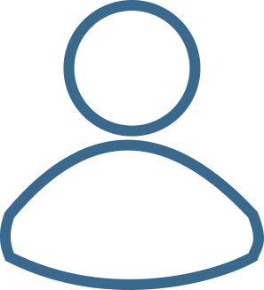

candidatos
Sexo:
{{sexos}}
Escolaridade:
{{escola}}

Káàh Nabees
6 de Junho de 1996
Diferenciais:
Trabalhou em Odebrestch
Trabalho em equipe
Hora extra não remunerada
Ocupações:
Programadora
Traficante
Youtuber

Káàh Nabees
6 de Junho de 1996
Diferenciais:
Trabalhou em Odebrestch
Trabalho em equipe
Hora extra não remunerada
Ocupações:
Programadora
Traficante
Youtuber